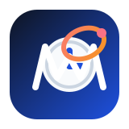
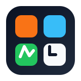
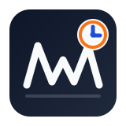

Current
Balanced mark: workforce wave plus clock dial. Safe, clean, product-ready.
public/workforce-clock-logo.svgFour alternate directions for the clocking system. Each keeps the same theme: workforce motion plus time tracking. Open this page in the browser and pick the one you want to use as the main app mark.
Balanced mark: workforce wave plus clock dial. Safe, clean, product-ready.
public/workforce-clock-logo.svg
More dynamic and brand-like. Feels like motion, verification, and time orbiting around the team.
public/logo-options/workforce-logo-orbit.svgA dashboard-card look. Good if you want the product to feel operational and enterprise-focused.
public/logo-options/workforce-logo-shift.svgLeans into time clock history. Slightly more literal, but memorable for a clock-in system.
public/logo-options/workforce-logo-punch.svg
Best for a multi-location workforce platform. Feels modular, modern, and system-oriented.
public/logo-options/workforce-logo-grid.svgThese are tighter and more corporate: simpler geometry, less playful color behavior, and stronger marks for a payroll, workforce, or operations product.

Most balanced for production use. Executive, stable, and still clearly about workforce plus time.
public/logo-options/workforce-logo-boardroom.svgMore technical and system-like. Best if you want accuracy and compliance to be the visual message.
public/logo-options/workforce-logo-precision.svgA more official mark. Feels secure and institutional, useful if the product should look authoritative.
public/logo-options/workforce-logo-crest.svgLeans into record-keeping and timesheets. Strong fit for HR, payroll, and attendance workflows.
public/logo-options/workforce-logo-ledger.svg